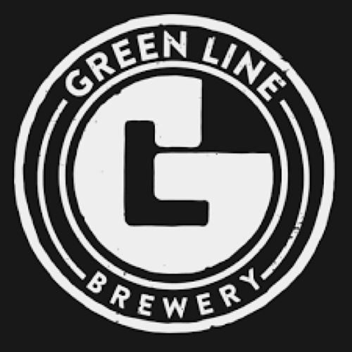

"This place is a bit of a hole in the wall, but it's got more vibe than a dog park on a sunny day!"
🐾🎉 Let me tell you about my latest adventure at a hidden gem in downtown Canton, GA—Green Line Brewery! This place is a bit of a hole in the wall, but it's got more vibe than a dog park on a sunny day! 🌞🐶
The atmosphere at Green Line is so welcoming that it's like one big happy family reunion every weekend! Seriously, people keep coming back for six years—talk about loyalty! And while there's a TV behind the bar, unless the Dawgs are playing, it's not always on. Why? Because everyone is too busy soaking in the good times, sipping on tasty craft beer, and jamming out to amazing live music from local artists. I mean, who needs TV when you've got live tunes and a bunch of humans who love dogs? 🎶🍻
Now, let's talk about the walls. You might find a patron or two taking a marker to the featured plastered wall, which used to be white but is now a colorful masterpiece! It's filled with phrases, conspiracy theories, initials, doodles, and songs from all the guests who've visited. It's like a giant scrapbook of memories! And guess what? They have a massive sticker wall, and you know I had to add my Frenchie flair to it! Now they're official Frenchies on Tap fans! 🎨🐾
The owners are super friendly and always out on the floor getting to know everyone's stories. It's more like a niche community than your average brewpub. We met one of the owners, Joel, and man was he an awesome guy, who even gave us his phone number to chat about a collaboration to benefit SHARE! How cool is that? I also got to meet some veterans, hand out my stat cards, and spread the word about our program. I'm basically a doggy ambassador now! 🇺🇸🐕
Now, let's get to the important stuff—THE BEER! We tried their house Shirtless IPA, and let me tell you, it was tastier than a fresh bowl of kibble! If we didn't have more stops on our adventure, we would've definitely tried a few more. And rumor has it they have exceptional tacos, so you know we'll be back to chat it up with Joel and the patrons while munching on some tasty bites and sipping on more brews! 🌮🍺
So if you're in the Canton area, make sure to check out Green Line Brewery! It's a paw-some place to hang out, make new friends, and enjoy some tail-wagging good times! Cheers to good vibes and even better brews! 🍻🐾✨